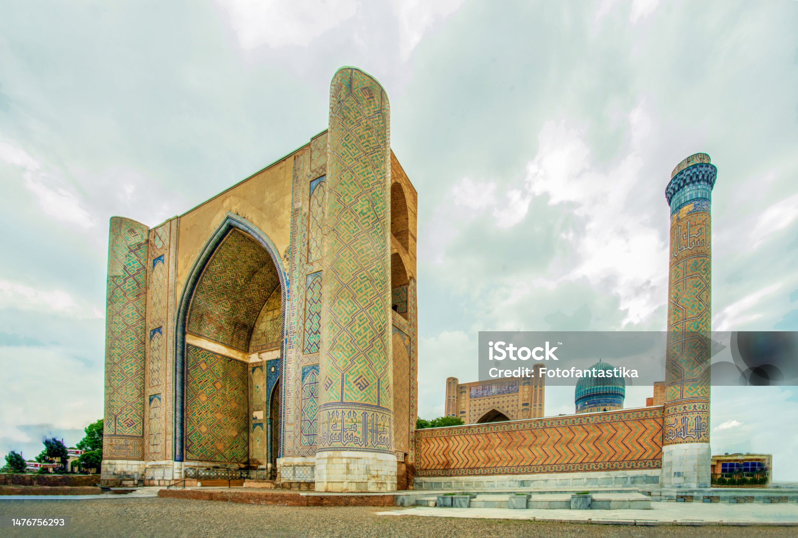

My Vacation in Uzbekistan and Tajikistan
This is my vacation to where I was born
Cities in Uzbekistan and Tajikistan:
- Dushanbe
- Tashkent
- Shahrisabz
- Samarqand
- Buhara
Link to Buhara
The Emirate of Bukhara
was a Muslim polity in Central Asia that existed from 1785 to 1920 in what is now Uzbekistan, Tajikistan, Turkmenistan and Kazakhstan. It occupied the land between the Amu Darya and Syr Darya rivers, known formerly as Transoxiana.
Its core territory was the fertile land along the lower Zarafshon river, and its urban centres were the ancient cities of Samarqand and the emirate's capital, Bukhara.
It was contemporaneous with the Khanate of Khiva to the west, in Khwarazm, and the Khanate of Kokand to the east, in Fergana. In 1920, it ceased to exist with the establishment of the Bukharan People's Soviet Republic.

The Emirate of Bukhara was officially created in 1785,
upon the assumption of rulership by the Manghit emir, Shah Murad. Shahmurad, formalized the family's dynastic rule (Manghit dynasty), and the khanate became the Emirate of Bukhara.
As one of the few states in Central Asia after the Mongol Empire not ruled by descendants of Genghis Khan (besides the Timurids), it staked its legitimacy on Islamic principles rather than Genghisid blood, as the ruler took the Islamic title of Emir instead of Khan. In the 18th-19th centuries, Khwarazm (Khiva Khanate) was ruled by the Uzbek dynasty of Kungrats.
